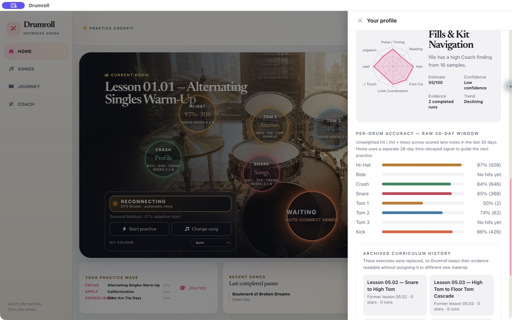
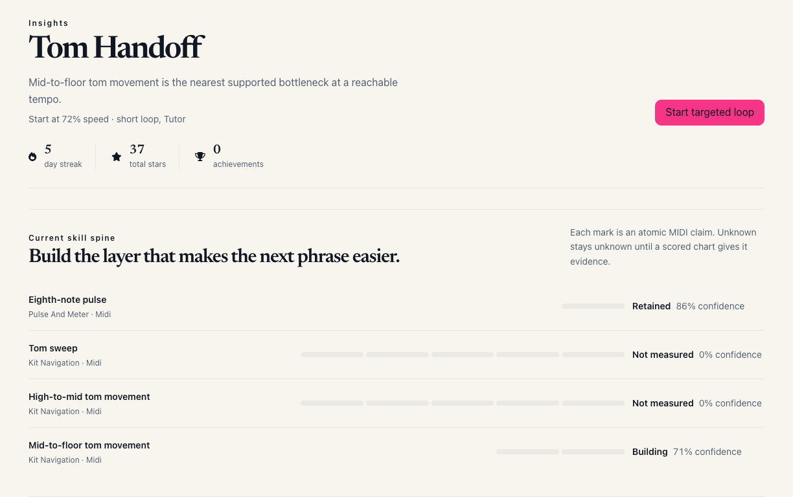

the KB8 drawer is retained as the supplied baseline. the current capture renders the full-height insights component with primary action, atomic skill spine, review queue, weekly target, and a closed evidence archive.

